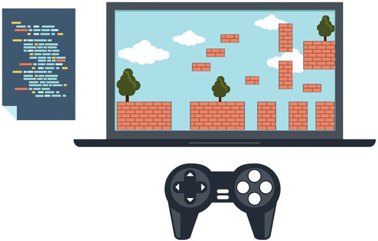
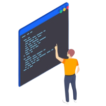

My definition of skills is the ability to do something, especially if you can do it better than others.
My 3 skills I have are coding, mathematical thinking, and an extreme curiosity for learning.
My career would be a programmer.
I would be a programmer because a programmer needs to know one or more coding languages, such as Python, JavaScript and HTML,
and they must be able to think critically about mathematical equations and should learn different skills quickly like how I mentioned before.
 